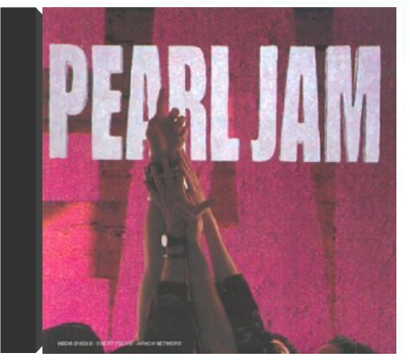

Les frères Coen ont convoqué la fine fleur du bluegrass et du gospel pour réaliser la bande originale de leur film le plus drôle. On y entend des violons qui geignent, des voix qui chantent à la lune, et on y sent vivre un monde et vibrer une époque. Et quand ces violons, par exemple, sont entre les mains de John Hartford ("Indian War Whoop", "I Am A Man Of Constant Sorrow"), on traverse des moments de pure délectation. Hartford est un des maîtres du violon bluegrass et Alison Krauss s'impose comme sa nouvelle déesse. Elle interprète ici "Down To The River To Pray" avec une dévotion intense et un abandon total. Les anciens côtoient la relève pour signifier encore mieux l'inaltérable continuité de ces musiques sans âge. Ainsi en est- il de Ralph Stanley ("O Death") ou des Stanley Brothers ("Angel Hand") qui chantent ces classiques du gospel du fond de leur âme. Toutes ces chansons sentent la tourbe et la sueur, le travail pénible sous un soleil de plomb et les bouffées d'espoir. Cet album permet en prime de découvrir des réunions inespérées avec le duo Gillian Welch et Alison Krauss ("I'll Fly Away"), ces deux-là rejoignant à leur tour Emmylou Harris ("Didn't Leave Nobody But The Baby"). Un CD 100 % au bois et aux voix d'une traçabilité totale. —José Ruiz  Film au casting impressionnant (G.Clooney, B.Pitt, J.Roberts), Ocean's Eleven se devait d'avoir une bande originale à la hauteur de ses prétentions. Et c'est chose faite, en divisant le disque en deux parties bien distinctes. La première est constituée de chansons dont l'indémodable "Caravan" d'Arthur Lyman ou "Papa Loves Mambo" d'un Perry Como toujours d'actualité. Pour la seconde partie, Steven Soderberh a fait appel au DJ David Holmes, bidouilleur de génie réputé dans l'underground new-yorkais. Et le compositeur se jette dans une fusion des époques, mariant le son des années soixante avec la technique du troisième millénaire. Jouissive, sa musique mêle avec un goût subtil, un rien provocateur, l'électronique au rétro bien trempé. Cela donne une teinte décalée, inexplicable mais ô combien savoureuse. Il suffit de se replonger dans "Bow Down To The Exit Sign", et l'envie d'un bon cambriolage se fait sentir. Une B.O.F aussi atypique qu'envoûtante. —Didier Leprêtre  On pourrait les appeler les Nine Inch Nails du punk. Tout comme NIN, les Offspring ont su utiliser les ingrédients d'un plat qui a fait ses preuves. Prenez des guitares bien grinçantes, faites-les jouer trois accords pas plus, ajoutez des voix d'écorchés vifs et flambez au vitriol avant d'enrober le tout dans une pâte très mélodique. Les singles de Smash, l'album du succès, passent toujours autant à la radio ("Gotta Get Away", "Come Out And Play", "Self Esteem"). A travers les 14 titres de Smash, les Offspring nous livrent une vision très incisive, malicieuse et pertinente de l'adolescence. C'est sûrement leur meilleur album. Il a plus de consistance que leurs premiers enregistrements et il est moins mielleux que leurs derniers. Un mariage parfait entre riffs et rage. —Genevieve Williams  Otis Redding, roi incontesté de la soul en Amérique, s'attaque en 1967 à l'Europe. Ce live, le seul sorti de son vivant, a été enregistré lors de la mémorable tournée Stax effectuée en Angleterre et en France. Otis, accompagné de Booker T & The MG's, nous sert un Best Of sublimé par la présence du public avec tout autant d'énergie qu'à Monterey. Ce live permet de retrouver un peu du charisme immense d'un artiste capable de s'approprier, sur la terre des Beatles et des Rolling Stones, "Satisfaction" ou "Day Tripper". Encore aujourd'hui, Peter Gabriel estime que ces shows ont été les plus grands concerts auxquels il ait assisté. —François Bacherig |  Le groupe Paris Combo a eu l'idée d'associer au nom de notre (belle) capitale, le mot qui désignait les petits orchestres de jazz américains. Ça tombe bien, ils sont quatre dont une fille et, avec Paris Combo, quand le jazz est là, la java ne s'en va pas forcément. Le ton est donné avec ce premier album porté par des rythmes swing et mambo, l'ensemble musical s'inscrivant dans la lignée de Django Reinhardt. Mais Paris Combo repose aussi sur un subtil métissage de notes orientales dans "Istanbul", plus latinos dans "Moi, mon âme et ma conscience" ou encore slaves dans "Berry Bouy". Avec sa gouaille de parigote, la chanteuse Belle du Berry, telle une Arletty moderne, fredonne des mélodies aux accents des faubourgs. Clin d'oeil : elle reprend "Ainsi soit-il" et "Si j'avais été", deux titres du répertoire de Jean Tranchant, un contemporain de Jean Sablon. C'est souvent dans les vieux pots... Une tendance à la croisée des genres. Intemporel et aérien. —Valérie Dupouy  Les nostalgiques de la chanson française de qualité seront aux anges. Paris Combo, formation typiquement parisienne comme son nom l'indique, emmenée par Belle du Berry, puise ses influences dans le jazz, de la ballade à la trompette bouchée au style manouche cher au cœur de Django Reinhardt. Quelques lignes de basse funky saupoudrées d'accords latino et le ton est donné d'entrée sur l'épatant "Mais que fait la NASA ?". La vision exotique de Paris Combo a tout pour séduire au-delà de nos frontières les amateurs de chansons sémillantes. C'est, semble-t-il, essentiellement mue par le plaisir de jouer et de chanter que ce groupe s'enracine avec un brio subtil dans une certaine tradition de la chanson populaire. Les thèmes contemporains sont également abordés (la pollution sur "Lettre AP") même si c'est principalement l'élégance de la gouaille que l'on retiendra de l'ensemble plutôt qu'un quelconque engagement. David Lewis, ancien pianiste d'Arthur H, accomplit de petites prouesses. Pétillant. —Hervé Comte  'Pat Thomas Introduces Marijata' is a seminal Ghanian album that fuses highlife, reggae, folk, funk and soul, from legendary vocalist Pat Thomas. Originally released in 1976 on Gapophone Records. 'Marijata' was a group made up of three members - Kofi 'Electric' Addison on drums, Bob Fischlan on organ and Nat Osmanu on guitar, hailing from Ghana. Pat Thomas career began in 1969 with the 'Broadway Dance Band', leaving a year later to join the 'Uhuru Dance Band'. He then played with Ebo Taylor's 'Blue Monks' and finally formed the 'Sweet Beans' in 1973 where he really made his name. The group released 'False Lover' in 1974, split and then reformed as Marijata, releasing 'Marijata' (also available on Mr Bongo) and this album, 'Pat Thomas Introduces Marijata'.  tenpearl jam A coups de déclarations, Pearl Jam et Nirvana s'étaient mené la guerre en musique au début des années 90. Les frères ennemis du grunge partageaient pourtant leur goût pour la révolte, les guitares bruitistes, les performances scéniques extrêmes... Premier album de Pearl Jam, Ten est une grosse bouffée de fraîche brutalité. Eddie Vedder alterne les coups de gueule et les élans d'optimiste, sa voix puissante et éraillée surfant sur les inflexions de la guitare agile de Stone Gossard. Les compères jettent d'ailleurs ici les bases de leur son, avant de s'orienter, la folie du grunge achevée, vers un rock plus carré et plus classique. En attendant, ils signent deux premiers hits magistraux : "Jeremy", portrait d'un adolescent torturé, devenu l'hymne des gamins mal dans leur peau, et "Alive", son riff de guitare joué en boucle et son refrain sur lequel Vedder célèbre le fait de pouvoir survivre à tout, qui sont devenus des standards, indispensables à toute bonne discothèque rock. —Isabelle Chelley |

Julien
Collection Total:
1 901 Items
1 901 Items
Last Updated:
Nov 1, 2021
Nov 1, 2021


 Made with Delicious Library
Made with Delicious Library